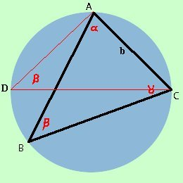
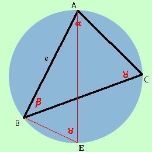

|
Iniziamo qui una serie di teoremi che ci permetteranno di risolvere i triangoli qualunque utilizzando il teorema dei seni posso
Teorema:
Dimostriamolo consideriamo un triangolo ed il suo cerchio circoscritto  prendiamo un vertice, ad esempio C, e da esso tracciamo il diametro del cerchio CD, colleghiamo poi D con A. Il triangolo CDA e' rettangolo perche' iscritto in una semicirconferenza (CD=2r), inoltre l'angolo in D come angolo alla circonferenza che insiste sull'arco AC vale e quindi possiamo scrivere per i teoremi sui triangoli rettangoli> b = 2r sen e quindi
consideriamo ancora lo stesso vertice C e tracciamo sempre il diametro CD ma stavolta colleghiamo il punto D al vertice B otteniamo il triangolo CDB Il triangolo CDB e' rettangolo perche' iscritto in una semicirconferenza (CD=2r), inoltre l'angolo in D come angolo alla circonferenza che insiste sull'arco BC vale e quindi possiamo scrivere per i teoremi sui triangoli rettangoli a = 2r sen e quindi
adesso invece cambiamo vertice per poter considerare il terzo angolo e prendiamo il vertice A tracciamo il diametro AE e colleghiamo il punto E al vertice B otteniamo il triangolo AEB  Il triangolo AEB e' rettangolo perche' iscritto in una semicirconferenza (AE=2r), inoltre l'angolo in E come angolo alla circonferenza che insiste sull'arco AB vale e quindi possiamo scrivere per i teoremi sui triangoli rettangoli c = 2r sen e quindi
quindi mettendo assieme le tre relazioni ottengo
In qualche testo il teorema viene anche chiamato teorema delle corde nota per me: in seconda stesura ampliare ai triangoli ottusangoli |
||||||||||||||||||

|

|

|

|